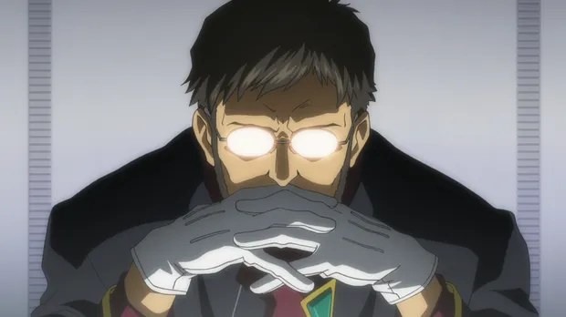

애니메이션 인빈시블의 한 장면

애니메이션 인빈시블의 한 장면

유엔 결의안 통과되어서 그거 말하면 요놈하고 잡혀감
에이 다 아시면서~
정확히는 중국에 하청했는데 중국이 북한에 2차 하청 뿌리는거라서?
달릴때 팔을 뒤로 펴는 기괴한 자세도..
옛날에 대운동회 였던가 그 만화에서도 그런 장면 나오길래 저건 공기역학적으로 더 빨리 달리기 위함인가? 생각했었는데
다 부질 없는 짓이었어 ㅋㅋㅋ
거기선 그냥 롤러 밀어서 팔을 고정하지 않음?
맨~ 마지막 최종장쯤에 외계인 쳐들어오고 거기서 예토전생된 주인공 엄마 나옴 주인공 엄마도 그렇고 주인공도 그렇고 그리 달림 지금와서 생각하면 안그래도 운동 만화라서 작화 쏟아붇고 있는데 팔동작까지 그리기엔 무리였나봄 ㅋ
닌자는 저렇게 달리는구나 (사실 쌀먹장면임)
변신 장면을 매 화마다 집어넣는 이유도
카드캡터 체리는 매화 복장바뀜 ㅋㅋ
거기는 항상 진심이어서 그래 클램프는 그래...
치지직에서 에반게리온 하는거봤는데 진짜 뭔가 좀그렇더라 ㅋㅋㅋㅋ
라젠카 절반 예산으로 만든거임
일본보다 소득이 절반 이하일때
그렇기도 하고 애초에 에반게리온이 저예산이기도 했음 에스카플로네 생각하면 ㅇㅇ...
라젠카 22억정도 에반게리온 1억6천엔정도
에스카플로네 약 8억엔...ㅇㅇ...
다음 시즌이 언제지.
은혼에서 가위 눌렸다고 장면 멈춰놓고 대사만 치는것도 있고 해결사사무실 바깥만 내내 보여주고 하는것도 있었는데 ㅋㅋ
음악애니보면 다느껴짐
그러니까 울려라유포니엄 봐주세요
리즈와 파랑새 정 말 명 작 입 니 다
3기는 대체 언제 나오는 거죠?
최종악장까지 다본결과 3기도 봐주는게맞음
그렇게 아낀다음에 딴데 쓰는 애니는 괜찮음 제작비 몰아주기니까 하지만 그런거 없는데는 좀 거시기함
자주 보다보면 존나 티나긴 함.
이새끼들 진짜 시즌 뒤로갈수록 개판쳐가지고 민심개떡락했던데
최근 쌀먹의 정점 전생중기사 이것도 레전드던데 카메라 앵글 좆같은건 둘째치고 같은 장면을 몇분씩 재탕하는 보법은 신선했다
저 쌀먹으로 리소스애껴서 전투씬 씹고퀄로 뽑아주면 불만없는데 보통 그렇지못함
북한에 하청해서 인건비 아끼는건 왜 말 안함??